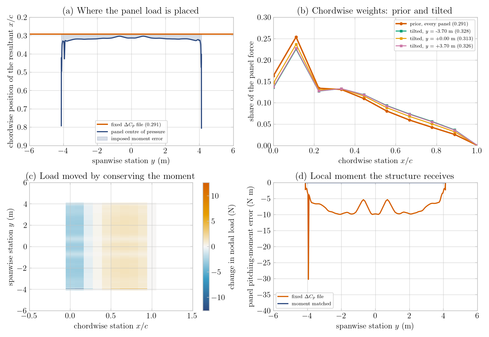
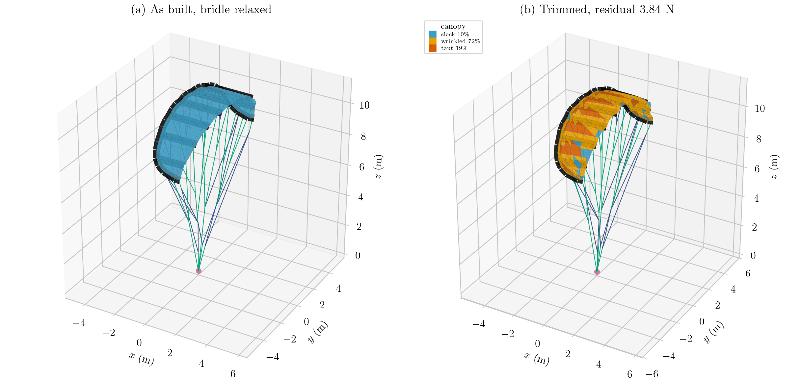
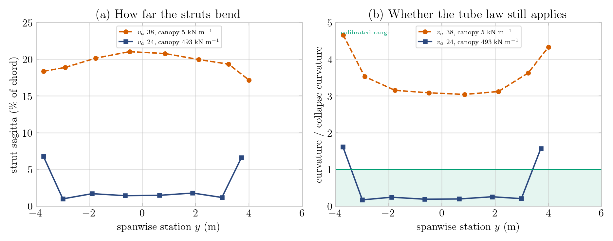
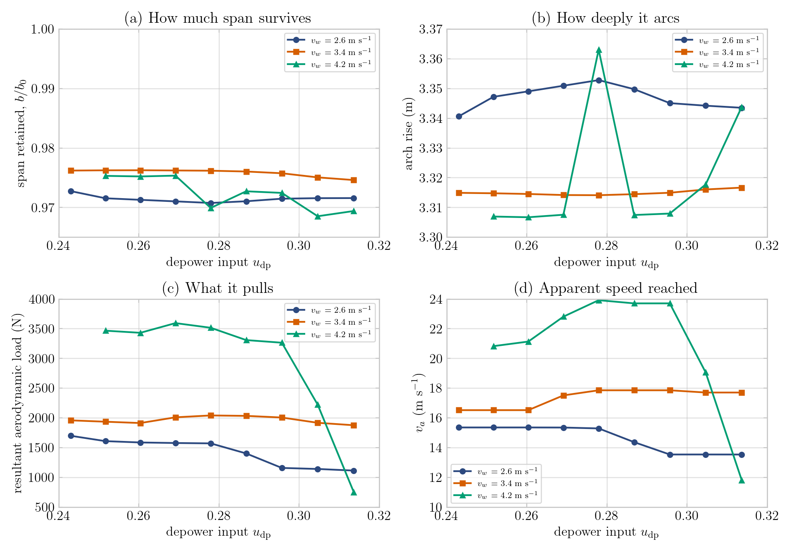

Coupling Billow to the quasi-steady trim#
Status: working, preliminary results below. Integrated 2026-09-11.
A typeset PDF of this document, with the figures, is
integration.pdfalongside it; rebuild withlatexmk -pdf integration.tex.
billow.pdf (alongside this file) documents the standalone structural package:
the element library, the validation against closed-form benchmarks, and the
kite_fem comparison. This document covers the other half — how that package is
driven against the VSM quasi-steady trim, what had to change on both sides to
make the coupled answer physical, and what the first converged runs say.
1. Architecture#
The coupling adds one module and reuses everything else.
aerostructural/
fem/coupled_solver.py the coupled loop, SHARED
fem/read_struc_geometry_yaml.py the geometry reader, SHARED
fem/aero2struc.py the load mapping, SHARED
aerodynamic_vsm.py the trim, SHARED
billow/structural_billow.py NEW -- the only new physics-facing code
examples/2_aerostructural/
run_simulation_BILLOW.py NEW -- the driver script
(Since 2026-10-07 the driver itself is aerostructural/billow/driver.py;
run_simulation_BILLOW.py only sets the inputs, and the study scripts below
live in studies/ (available on request).)
The coupled solver in fem/ is, despite its location, not FEM-specific: it
already dispatched on config["structural_solver"] between pss and
kite_fem. Adding Billow was a branch at each of seven dispatch points, not a
copy of its thousand lines. Any future backend should do the same.
structural_billow.py is the only module that imports both
billow and the AWETrim schema. That boundary is deliberate and
load-bearing: the structural package stays free of PSS, VSM and YAML knowledge,
so its element physics can go on being validated against closed-form solutions
independently of anything the coupling does.
The coupled loop#
Unchanged from the FEM path except for step 7:
structural nodes → VSM leading/trailing edge points
body_aero.update_from_points, bridle-line drag segments rebuiltVSM quasi-steady trim → panel forces, moments and the trim state
panel loads → structural nodes (
aero2struc, §4)inertial and gravity loads distributed by nodal mass
bridle line drag
structural_billow.run_billow→ new node positionsAitken relaxation on the node displacement
tape actuation, if any
convergence check
Element mapping#
structural_billow.instantiate consumes exactly the arrays
read_struc_geometry_yaml.main already returns, so one reader serves both
backends:
reader element |
Billow element |
note |
|---|---|---|
|
|
diameter arrives in |
|
|
rest length is the WHOLE rope; the reader stores that total on each arm |
bridle |
|
tension-only |
canopy grid springs |
dropped |
replaced by wrinkling CST membrane triangles on the same grid |
Replacing the canopy is the point of the exercise. The FEM canopy is a square
spring net with diagonals: too soft by 1 - nu in tension, carrying shear only
as a fourth-order effect of the diagonal stretch, and with no notion of a
biaxial stress state at all. A relaxed (Pipkin) membrane carries the fabric’s
real biaxial law and settles into a tension field rather than mesh-scale
crumple. Everything else — bridle, pulleys, tubes — is element-for-element the
same as the FEM model, so a Billow-versus-FEM difference is attributable to the
canopy and the solver formulation and to nothing else.
On struc_geometry_FEM_full.yaml: 268 nodes, 1098 DOF, 47 cables, 20
pulleys, 97 inflatable tube beams, 378 membrane triangles, replacing 693
canopy springs. Build under a second; the structural solve costs ~2–5 s per
coupled iteration against ~8–25 s of VSM, so the structure is not the
bottleneck.
Geometry#
Billow requires struc_geometry_FEM_full.yaml. It is the only file in the repo
carrying strut_tubes, leading_edge_tubes and pressure; the reduced PSM
files are bridle-and-spring only and cannot feed beams or a canopy mesh.
That choice has a consequence worth stating plainly. FEM_full has 28
leading-edge nodes → 27 sections, so the reachable aero panel counts are
27 × n: 27, 54, 81, 135. The wes-quasi-steady campaigns run 45 panels, but
that is 9 sections × 5 on the PSM geometry and is not reachable here. 54 is
the adopted default — nearest to 45 and above the 27/36/45 band as_config
records as mesh converged.
2. Three things that had to be true before the answer was physical#
Each of these was found by looking at the converged shape and asking whether it could be right. None of them is a solver bug; all three are modelling inputs that were wrong or badly chosen, and all three were invisible in the FEM path.
2.2 Reference curvature breaks before the physics does#
The beam’s reference curvature is omega_0 = psi / L0 with psi a Rodrigues
vector. It grows like tan(theta/2) and is singular at theta = pi, so a
short element bridging a large frame change is numerically hostile long
before it is physically wrong.
Seeding each member’s roll independently — the obvious thing — put the worst
LEI-V3 element at 173 degrees, omega_0 = 753 /m on a 17 mm element, which
is 7 degrees from the chart singularity.
The fix uses a property of the section rather than a numerical trick. An
inflated tube is isotropic in roll (ga_2 == ga_3, a single bending law), so
only d1 is physically determined and the roll is entirely free. Spending it on
conditioning — transporting frames by minimal rotation over the beam tree, and
letting the long member own each leading-edge/strut joint
(junction_frame="strut", since the LE runs are 300–750 mm and the strut stubs
17–97 mm) — gives 10.6 /m, a factor of 71.
2.3 A gravity-only load case is not a smoke test#
The KCU is pinned below the wing, so gravity alone slackens every bridle line and the bridle knots become a mechanism. The residual then sits at exactly their weight — 2.021 N on nodes 79 and 113 — and no amount of solver tuning moves it.
Billow reports this faithfully. kite_fem never shows it because its
I_stiffness = 25 acts as a ground spring on every node, quietly holding
unsupported nodes up. Read a stuck residual equal to some node’s load as
“this node has no load path”, not as a conditioning problem. Load the wing
away from the KCU, as the aerodynamics does.
3. Two inputs that were wrong, and why they mattered more than expected#
3.1 Apparent wind speed#
as_config’s flight state is zero elevation, zero azimuth, 90° course, gravity
off — the fastest corner of the wind window. At 8 m/s wind and the trimmed
L/D of about 4.8 that is v_a ≈ 38 m/s, above the entire 13–25 m/s band the
wes-quasi-steady campaigns sweep.
For the FEM path this mattered less than it looks, because the campaigns argue that coupled trims are v²-self-similar and correct for it. That argument does not survive the introduction of the tubes. The inflatable bending law
M(kappa) = M_max * (1 - exp(-EI_0 * kappa / M_max))
saturates. Past M_max the tube has essentially no incremental bending
stiffness and hinges at constant moment — the compression-side wrinkling
collapse of a real inflated tube. Collapse is reported, not enforced, because a
dropping post-collapse moment would be an unbounded mechanism that energy
minimisation would simply run away from.
A saturating law has no self-similarity: the load decides whether the tubes are
inside their calibrated range at all. At v_a 38 every strut sat 3.0–4.7× past
its collapse curvature, at 86–94% of M_max, and hinged into 17–21% of chord.
The run script therefore sets the wind so that v_a lands in the campaign band. The campaigns iterate wind onto a target v_a with a ratio table; this is the one-shot version of the same idea.
3.2 Canopy stiffness#
The canopy was initially set to E*t = 5000 N/m to match the kite_fem spring
net, on the reasoning that it made the two canopies comparable. It made them
comparable and both wrong: at any plausible sailcloth thickness 5000 N/m is
E ≈ 20 MPa, which is rubber.
The real cloth is already described in the geometry file. canopy_density: 170
g/m² of polyester ripstop gives a solid-equivalent thickness of
0.170 / 1380 = 123 µm, and at a crimp-derated in-plane modulus of 4 GPa that
is E*t ≈ 4.9e5 N/m — about a hundred times stiffer.
A canopy that soft does not carry load; it billows, and drags the struts with it. Measured on the same load case, strut sagitta ran 4.5–6.7% of chord at 5e3 N/m and 0.6–4.1% at 1e6 N/m.
The modulus is a material estimate, not a measurement. The repository contains no tensile data for this cloth. The plausible range — 2–12 GPa fibre modulus, varying crimp derating — spans
E*tfrom 2.5e5 to 1.5e6 N/m. A tensile test on the actual canopy would replace it, and should.
4. Chordwise load placement is the local pitching moment#
Independent of Billow, but surfaced by it, and it changes the FEM path too.
aero2struc spreads each spanwise VSM panel force over ten chordwise nodes.
Where it puts the resultant is the panel’s local pitching moment, and the
wing’s trim is a moment balance — so this is a first-order modelling choice, not
a detail of interpolation.
The historical cp_file mode reads one measured Delta C_p shape from a
single-angle file and applies it to every panel at every angle of attack. Its
centroid on the LEI-V3 file is 0.291 c. Measured on one trim at 135 panels,
the panels’ actual centres of pressure — which VSM already computes from each
panel’s own force and moment — run 0.303 to 0.805 c. The fixed station
therefore imposes 917 N m of spurious pitching moment, about −10 N m on
nearly every panel, with the same sign. A systematic bias is precisely what
shifts a moment balance; a random one would largely cancel.
chordwise_distribution: moment_matched keeps the measured shape as a prior and
tilts it onto each panel’s own centre of pressure:
w_i = w0_i * exp(lambda * t_i) / sum_j w0_j * exp(lambda * t_j)
with lambda solved from sum_i w_i t_i = t_cp. Three properties make the
exponential tilt the right correction rather than, say, a least-squares one:
every weight stays strictly positive, so no unphysical negative patch of load
appears; the weights still sum to one, so the panel force is preserved exactly;
and lambda is the natural parameter of an exponential family, whose mean is
strictly increasing in it, so the root exists, is unique, and Newton converges
from zero. It is also the minimum-relative-entropy correction, so the measured
shape is kept wherever the moment does not contradict it.

(a) the single fixed chordwise station the ΔC_p file imposes against each panel’s actual centre of pressure — the shaded gap is moment the structure receives but the aerodynamics never produced; the excursions at y ≈ ±4 m are the stalled tip panels. (b) prior and tilted weight sets. (c) the load the correction moves. (d) the per-panel moment error, same sign on nearly every panel, against zero for the matched weights.
Residual moment error: 917 N m → 6e-9 N m. The default stays cp_file so
stored results reproduce; the Billow script sets moment_matched.
A warning about the diagnostic. check_moment_preservation does not
measure any of the above. Both of its call sites hand it the already-distributed
loads, so it reports the error of the spatial nearest-node step alone. That
error is 0.09% on the built shape but around 20% once the kite has deformed —
a separate and still-open defect. Do not quote its numbers as evidence about
the chordwise placement.
5. Preliminary results#
LEI-V3, unactuated (the tape lengths the geometry stores: depower_tape
l0 = 1.9 m, i.e. u_dp ≈ 0.28), 54 aero panels, gravity off, moment-matched
chordwise loads.
Convergence#
state |
iterations |
final residual |
|---|---|---|
real canopy, v_a 24 |
2 |
3.84 N |
soft canopy, v_a 38 |
7 |
4.33 N |
soft canopy, v_a 38, 135 panels |
10 |
4.45 N |
Gate is 5 N absolute. The physically-correct case is also by far the easiest to converge — worth noting, because a model driven outside its calibrated range does not merely give a wrong answer, it costs more to get it.

(a) the built shape after the bridle relaxation of §2.1, before any aerodynamic load; (b) the trimmed shape, canopy shaded by the wrinkling state the solver chose. Black: inflatable tubes at their real relative diameters. Green: bridle cables. Blue: pulley ropes through their sheaves. Magenta: the KCU, the only pinned node.
Span reduction#
The headline structural result. Tip-to-tip is the straight distance between the two leading-edge tips; LE arc is the length measured along the tube.
as built |
trimmed |
change |
|
|---|---|---|---|
tip-to-tip span |
8.202 m |
7.959 m |
−0.243 m, −2.96% |
leading-edge arc length |
12.662 m |
12.636 m |
−0.026 m, −0.21% |
arch rise above the tip chord |
3.282 m |
3.362 m |
+2.42% |
mean chord |
2.044 m |
2.036 m |
−0.4% |
The span reduces by 3.0%, and it does so by arcing, not by stretching. The leading-edge arc length is conserved to 0.2% — the tube neither extends nor compresses — while the arch rise grows 2.4%. The wing bends into a deeper arc under load and pulls its tips inward. That is the correct physical picture for a leading-edge-inflatable kite, and it is a stringent check on the beam formulation: an axially sloppy beam would have shown span loss through shortening instead.
For contrast, the same kite with the soft canopy at v_a 38 gives the wrong sign:
soft canopy, v_a 38 |
|
|---|---|
tip-to-tip span |
+2.24% |
leading-edge arc |
−0.02% |
arch rise |
−3.87% |
mean chord |
−7.1% |
A canopy at E = 20 MPa stretches instead of carrying load, so the sail draws the trailing edge toward the leading edge (chord −7%) while the wing flattens and splays its tips outward. Both the sign of the span change and the magnitude of the chord change are unphysical. This is the clearest single argument for §3.2.
Strut bending#
Sagitta is the maximum perpendicular deviation from the straight line joining the strut’s two ends. Utilisation is curvature over the law’s collapse curvature; above 1.0 the tube is outside the range the ASKITE fits were calibrated over.
configuration |
main struts (6) |
outboard struts (2) |
|---|---|---|
v_a 38, canopy 5 kN/m |
17–21% of chord, 3.0–4.7× |
— |
v_a 21, canopy 5 kN/m |
7.1–9.5%, 1.2–2.2× |
— |
v_a 24, canopy 493 kN/m |
1.0–1.8% (22–44 mm), 0.17–0.25× |
6.6–6.8% (112–115 mm), 1.6× |
The six main struts are effectively straight — tens of millimetres over 2.2–2.6 m — and sit comfortably inside the calibrated range. This matters because real LEI struts do not visibly bend in flight, and a model that bends them is wrong whatever its residual says.
The two outboard struts remain past collapse. They are the thinnest (0.080–0.106 m against 0.108–0.141 m) and the shortest, and they sit next to the tip region where VSM reports stall, so they are where the inflation pressure matters most. See §6.

(a) sagitta as a fraction of chord; (b) curvature over the collapse curvature of the fitted tube law, calibrated range shaded. At v_a 38 with the spring-net canopy every strut is far outside the range the ASKITE fits cover. With the real apparent speed and the real cloth the six main struts fall to a fifth of collapse curvature; only the two thin outboard struts remain above 1.
Canopy state#
Fraction of the 378 membrane triangles in each regime at the solved state:
slack |
wrinkled |
taut |
resultant aero load |
|
|---|---|---|---|---|
real canopy, v_a 24 |
9.5% |
72.0% |
18.5% |
3.57 kN |
soft canopy, v_a 38 |
1.9% |
41.0% |
57.1% |
10.73 kN |
The realistic canopy is predominantly wrinkled — carrying tension in one direction and none across it. That is the expected state for a sail: a genuine tension field over most of the surface, going taut only where it is pulled biaxially. The soft canopy at three times the load reads as mostly taut simply because it has stretched far enough to carry biaxial tension everywhere, which is what a rubber sheet would do.
This diagnostic has no counterpart in the spring-net canopy. A net has no biaxial stress state and so cannot distinguish these cases at all.
Depower sweep#
Continuation chains either side of the built tape length, at three winds: 26 converged points over u_dp = 0.243–0.314, in 19 minutes. Each chain walks the tape inside a single coupled call so every step warm-starts the next; solving each point independently was measured at 14 minutes per point.

Each curve is one wind speed; within a chain the wind is held, so v_a slides with u_dp and (d) is a readout rather than a control. (a) span retained against the as-built 8.202 m. (b) arch rise — the outlier at u_dp 0.278 is the built point, the only step without a warm start. (c) resultant aerodynamic load. The v_w = 4.2 curve leaves the attached branch past u_dp ≈ 0.30 in both (c) and (d).
Span loss is nearly invariant over the box — 96.9% to 97.6% retained everywhere. Depowering by 0.07 in u_dp and nearly doubling the wind barely move it, so the 2.96% above is the wing’s signature across this operating box rather than a property of one trim point.
What depower controls is load, not shape. The resultant aerodynamic force falls 29% at v_w 2.6 and 35% at 3.4 across the u_dp range, against about 0.5% of span movement. At least this far from stall, the depower tape is a load knob.
Three caveats, all visible in the figure and none yet resolved:
The highest-wind chain leaves the attached branch past u_dp ≈ 0.30: load 3263 → 751 N, v_a 23.7 → 11.8 m/s. At u_dp 0.314 the highest wind pulls less than the lowest — deep stall, not depower. Wants the attached-branch guard the campaign scripts use.
The built point of each chain is under-converged, being the one step with no warm start (4.11 N against ~2 N); it is the arch-rise outlier in (b). Chain structure, not physics.
Span is not monotonic in wind — 2.6 loses more span than 3.4. Unexplained; may be caveat 2 leaking in.
The flat v_a segments in (d) are quasi_steady_trim.max_nfev: 8 — the
warm-started trim returns a bit-identical opt_x when it starts inside
tolerance. Harmless, but v_a per step is not independently converged.
8. Mirror symmetry#
An unactuated kite at the centre of the wind window with gravity off is mirror-symmetric in every input, so its solved shape must be mirror-symmetric too. It was not. Chasing that found three independent causes, two of them fixed.
8.1 The geometry was asymmetric before any solve#
Two slips in the shared canopy-section interpolation
(fem/read_struc_geometry_yaml.py), both of the same kind — a quantity measured
one way divided by a quantity measured another:
ratio_tetook the leading-edge distance over the trailing-edge length. That is a fraction only when the two runs happen to be equal. Undery -> -ythe LE distance becomes its complement while the TE length does not, so a section and its mirror got blend weights that did not sum to one. Worst where the bounding struts differ most — a 0.35 m tip chord beside a 1.7 m strut — which is exactly where the error showed.Both ratios divided a straight-line distance by an arc length. On a curved edge the two chords from either bounding strut do not add up to the arc between them, so the same complement argument fails again.
Built-geometry mirror mismatch: 171.73 mm → 0.000000 mm. The leading and trailing edges themselves were always exact; it was only the interpolated interior. This function is shared, so the FEM and PSS paths were affected too.
8.2 The canopy triangulation was not mirror-symmetric#
Raised by Roland Schmehl in review. Splitting every quad along the same
diagonal is directionally biased, and under y -> -y that diagonal maps to the
other one, so the mesh is not mirror-symmetric. On a finely resolved mesh the
bias is small; here the quads are a sizeable fraction of the wing.
Measured from the now-exactly-symmetric geometry, the solve generated 3.5–21 mm of left-right mismatch. (These were taken with Anderson still active and overstate the canopy’s share — see §8.5 for the clean attribution.) The distribution confirms the mechanism: the mismatch is largest on the pure-canopy sections (14–21 mm) and smallest on the strut-stiffened ones (~4 mm) — it appears where the membrane governs and is suppressed where a beam carries the load.
canopy_mesh now offers three patterns:
pattern |
triangles per quad |
extra nodes |
mirror-symmetric |
can a quad dome? |
|---|---|---|---|---|
|
2, one diagonal |
0 |
no |
no |
|
2+2, superposed at half |
0 |
yes |
no |
|
4, via a quad-centre node |
1 per quad |
yes |
yes |
union is an overlay, not a subdivision, and the distinction matters. You
cannot cut a quad into four triangles with both diagonals — on a non-planar quad
the diagonals do not even intersect, and that is precisely what a centre node is
for. What union does instead is lay the two possible 2-triangle
triangulations, (abc, acd) and (abd, bcd), on top of each other, each
carrying half the stress resultant. The quad is covered twice, by two
independent sheets, and the two diagonals never meet.
Two consequences follow, and both are why it is a control rather than a recommendation:
A quad need not be planar, and on a non-planar quad the two triangulations describe two different surfaces. The patch is then modelled as two interpenetrating half-stiffness sheets rather than as one surface.
It still cannot dome. Every triangle has all three corners on the quad corners, so the patch has no interior freedom, and superposing two fold-only surfaces gives a fold-only patch.
Its one virtue is what it was built for: it is exactly mirror-symmetric (the
reflection maps one triangulation onto the other) at zero added DOF, so it
separates the diagonal bias from the DOF count in the A/B below. cross changes
both at once.
All three store identical energy under a uniform stretch (71.134618 J at 1%,
1849.850446 J at 5%) — verified, and it caught union being 2x too stiff before
the stress resultant rather than the thickness was scaled.
cross is Roland’s proposal and is the only one that gives a patch the freedom a
billowing sail needs: a two-triangle quad can only fold along its diagonal, it
cannot bulge. It is not yet fairly tested, because its centre nodes are
massless and receive no direct aerodynamic load — the aero-to-structure mapping
targets grid nodes only — so they are held by the membrane alone. Extending the
load mapping to them is the outstanding work.
8.3 What remained was aerodynamic#
On an exactly symmetric wing the spanwise resultant must be zero. This needs no panel pairing to check, so it is immune to indexing mistakes:
gamma loop |
|
|
per-panel mirror error |
|---|---|---|---|
|
1e-8 |
0.00000 N |
3.4e-07 N |
|
1e-6 |
-11.079 N |
— |
|
1e-8 |
-0.7125 N |
1.8e-01 N |
|
1e-10 |
-1.2337 N |
— |
Anderson acceleration breaks the mirror symmetry of the circulation solve,
by five and a half orders of magnitude, and tightening the tolerance makes it
worse. It is symmetry-equivariant in exact arithmetic, so the mechanism is
almost certainly its ill-conditioned least-squares amplifying roundoff-level
asymmetry; the tolerance signature fits, since tighter convergence makes the
residual-difference columns more degenerate. This is not local to Billow —
as_config ships anderson and every wes-quasi-steady campaign passes it.
Coupled effect on the unsteered case:
configuration |
left-right mismatch |
|---|---|
diagonal mesh, anderson |
118.9 mm |
symmetric mesh, anderson |
55.7 mm |
symmetric mesh, base |
28.2 mm |
The base loop was also faster end to end here — 64 s against 144 s, two coupled iterations against seven — because it gives the outer loop a smoother map. An earlier “6x slower” figure was measured at a much higher load and does not generalise. The gamma loop alone also moves the span by 51 mm (0.6%), so this is not only a symmetry question.
8.4 The remaining 28 mm (resolved in §8.6)#
Resolved: it was the tube frames, which were not mirror-symmetric even though every node position was – see §8.6. The text below is the state of the investigation before that was found.
Both the geometry and the canopy mesh are now provably symmetric, and the
aerodynamics is symmetric when base is used, yet 28.2 mm remains. It is not
convergence error: tightening the coupled gate from 5 N to 0.5 N made it larger,
not smaller.
One observation, offered as an observation rather than a cause: 12.4% of mirror-paired canopy triangles (94 of 756) disagree on their wrinkling regime, with 59 elements within 1e-4 of the branch discriminant. The relaxed Pipkin energy is continuous across those branches by construction, so this is most likely a readout of the shape difference rather than its origin.
The natural next test — does the mirrored configuration have the same energy, in
which case the minimum is nearly degenerate and the solver is picking an
arbitrary point in a flat valley — was attempted and abandoned as
unreliable. Reconstructing a coupled state after the fact proved harder than
it looks: a geometrically exact beam’s energy depends on positions and frames
together, and the saved pair was inconsistent because Aitken relaxation moves the
positions after the solve. sim_output.h5 now stores solved_positions
alongside frames as a consistent pair for exactly this reason.
If the question is taken up again, the diagnostics should be computed inside
run_billow, where the state is consistent by construction, rather than
rebuilt from a saved file.
Whether it is worth taking up is a fair question: 28 mm is 0.35% of span, on a model whose canopy modulus is uncertain by a factor of three (§3.2) and whose strut inflation pressure is unverified (§6).
8.5 Attribution, measured cleanly#
The figures in 8.2 were taken with Anderson still active, which overstates the
canopy’s share. Re-measured with everything else symmetric – fixed geometry,
base circulation loop – and all three patterns at a matched 0.5 N gate:
pattern |
nodes |
DOF |
triangles |
mismatch |
residual |
iterations |
|---|---|---|---|---|---|---|
|
268 |
1098 |
378 |
34.70 mm |
0.47 N |
2 |
|
268 |
1098 |
756 |
28.17 mm (-18.8%) |
0.46 N |
2 |
|
457 |
1665 |
756 |
31.84 mm (-8.2%) |
0.13 N |
5 |
So the honest ordering is:
Anderson dominates. On the diagonal mesh it alone accounts for 118.9 -> 34.7 mm.
The canopy diagonal is a real but secondary effect, about 6.5 mm once the aerodynamics is symmetric, not the ~63 mm that 8.2 implies.
28 mm remains whatever the mesh – the tube frames, §8.6.
Two things worth noting about cross. It is not better than union on
symmetry despite both meshes being exactly mirror-symmetric – most likely
because its centre nodes carry no direct aerodynamic load and are held by the
membrane alone. But it converges markedly tighter (0.13 N against 0.46 N),
consistent with the extra freedom being real: a quad that can dome has a
lower-energy state available to it than one that can only fold.
8.6 The tube frames were not mirror-symmetric#
The question left open by §8.4 was whether the leftover asymmetry was (a) a solver artefact – the minimum-energy solve picking a side of a flat valley from a slack, near-singular start – or (b) genuine symmetry breaking, a symmetric equilibrium that is unstable under the frozen aerodynamic load. It was neither. The structural model itself was not mirror-symmetric.
Before it was found, the traction load transfer had moved the number (68.7 mm of
shape on the coarse cross canopy, 40.1 mm once da49d19 applied the transfer in
every coupled iteration), always with the same signature: concentrated at the
two outermost section pairs and growing toward the trailing edge, and just as
large powered to u_dp 0.25 (71.2 mm). The convergence tolerance was already ruled
out (inner tolerance bit-identical from 1.3e-2 to 1e-4 N; the structure alone,
under an exactly symmetric load, converged to 2.4e-6 N and was still 18.8 mm off).
The decisive test (check_symmetric_equilibrium.py (available on request))
takes the structure alone under the exactly mirror-symmetric first-iteration load
(2253 N, symmetric to 4e-14 N) and solves it four ways with the same numerics:
free from the built state, constrained to the mirror-symmetric subspace
(positions x_p = M x_i and rotation increments psi_p = -M psi_i over every
node, bridle and quad centres included), then released, and released after a
5 mm antisymmetric kick. Two model checks run first, because positions alone
cannot show a frame asymmetry:
check |
frames transported (before) |
frames mirrored (after) |
|---|---|---|
tube frame vs mirror of its partner |
up to 60.2 deg, 96 of 98 frames |
0 (roundoff) |
internal moment mirror error at a random symmetric configuration |
1.1e3 of 2.8e3 N m |
2e-11 N m |
internal force mirror error, same configuration |
1.0e4 of 2.4e6 N |
6e-8 N |
mirror operator vs tangent stiffness, |
8.4e5 |
1.4e-2 |
constraint reaction of the symmetric solve |
190 N |
1.2e-8 N |
|
+1.28 J |
-4e-12 J |
free solve from the built state, intrinsic mismatch |
232.6 mm |
0.00 mm |
released from the exact symmetric state |
the same asymmetric minimum ( |
stays symmetric |
A symmetric model under a symmetric load has a symmetric equilibrium with zero constraint reaction; 190 N says the model was not symmetric, and the free solve reaching the same minimum from the slack start and from an exactly symmetric one says the side was fixed by the model, not by roundoff.
Mechanism. structural_billow.build_frames transports the tube roll by
minimal rotation over the beam network from one root (the left tip). The tube
section is isotropic, so the roll was believed free. It is free as a uniform
gauge along a member, but the discrete element measures the relative rotation of
its two end frames, so a roll that differs between neighbouring nodes is not a
gauge. And the transport is not mirror-equivariant on an LEI kite: the leading
edge crosses the plane, so the reflection reverses its tangent, while the struts
keep theirs – and at every strut junction the transport hops between the two.
Each hop leaves a roll that the mirror image of the same hop does not, so the
far half arrives rolled against the mirror image of the near half – by up to
60 degrees on the LEI-V3, past its eight interior strut junctions.
Fix. structural_billow.symmetric_frames (config mirror_frames: true, the
default) keeps the near half’s frames and mirrors them onto the far half,
R_p = M R diag(-1, 1, 1). With one director-sign matrix for every node, each
element’s strains map to a sign-flipped copy of its mirror element’s, and the
tube kernels are even in every strain component, so the energy is exactly
mirror-symmetric. The near half, and so its reference curvatures, are untouched;
an asymmetric geometry is left as built; a beam member lying in the plane (a
centre strut) cannot share the leading edge’s signs and raises. The generic
pieces live in billow.symmetry.
After the fix the symmetric equilibrium is stable, and the free solve finds it. At the symmetric equilibrium the lowest antisymmetric stiffnesses are four numerical zeros – slack bridle knots (nodes 71/105 and 80/114) that carry no load – and then 0.53 and 0.75 N/m, all positive. After the 5 mm kick the wing returns to 0.00 mm; the loadless knots keep their share of the kick, and that is all the 0.06 mm “shape” figure picks up, through the rigid alignment (a 0.0005 degree rotation). There is no bifurcation and no deadband around u_s = 0 at this load.
Coupled runs, coarse cross, base circulation loop, 0.5 N gate:
run |
global |
of which shape |
residual |
iterations |
|---|---|---|---|---|
traction on the first solve only, frames transported |
97.5 mm |
68.7 mm |
0.37 N |
9 |
same, powered to u_dp 0.25 |
100.4 mm |
71.2 mm |
0.01 N |
26 |
traction every iteration (da49d19), frames transported |
57.1 mm |
40.1 mm |
0.04 N |
5 |
traction every iteration, frames mirrored |
2e-5 mm |
– |
0.04 N |
5 |
same, powered to u_dp 0.25 |
4e-5 mm |
– |
0.18 N |
22 |
Mirroring also changes the answer, not only its symmetry: the far half’s tubes had been carrying the wrong reference curvature and twist, and the outermost section pair’s elastic deformation drops from 165 to 126 mm.
What this means for steering. The clean u_s = 0 baseline comes out of the
ordinary free solve, from the slack built state; no constrained first solve is
needed, so none was added. The constraint machinery stays as a diagnostic
(MinimumEnergySolver(equalities=...), structural.symmetry.mirror_equalities,
structural_billow.symmetric_equalities).
Every Billow result before 2026-09-11 used transported frames; mirror_frames: false reproduces them. The powered walks need run_ab_canopy_pattern.py --no-stagnation-stop: the driver’s stagnation test compares two residuals ten
iterations apart, and an oscillating residual after a tape step tripped it by
coincidence at 21.5 N.
6. Open items#
Roughly in priority order.
Strut inflation pressure.
struc_geometry_FEM_full.yamlrecordspressure: 0.3bar, which sets bothM_maxandEI_0through the ASKITE fits. The two outboard struts are still 1.6× past collapse, and being the thinnest they are the most pressure-sensitive members on the kite. The real V3 operating pressure should be confirmed and the fits re-evaluated at it.Canopy modulus is an estimate. See §3.2. Its plausible range is roughly ±3×, and §5 shows the answer is sensitive to it — including the sign of the span change at the soft end.
The spatial load mapping loses moment.
map_aero_forces_to_struct_nodesdrops ~20% of the applied moment once the kite has deformed (§4). The chordwise placement is now exact; this step is not.Tube axial and shear stiffness are derived, not fitted. The ASKITE fits cover bending and torsion only.
EAandkappa G Aare currently read off the same fits’ initial slopes as a modulus over the thin-wall section. This is defensible and not a sensitive quantity — an inflated tube is far stiffer in extension than in bending — but it is an assumption.The stiffness ladder is untested end to end.
set_stiffnessesexists and is unit-tested, but no coupled run has yet used a stiffness continuation ramp the way the PSS path does.Steering and depower actuation are wired but unexercised.
set_rest_lengthreaches the tape parameters and the driver branch calls it, but every run so far has been unactuated.
7. Running it#
python examples/2_aerostructural/run_simulation_BILLOW.py
Results land in results/<kite>/aerostructural/billow/<case>/ as
sim_output.h5 plus the deformed structural and aerodynamic geometry YAMLs.
Note that the results directory is keyed on actuation only and is overwritten
between runs that differ in anything else — copy a run aside before changing
panel count, wind or canopy stiffness.
Numerics live in the structural_billow block of as_config.yaml; every key
is listed with its default in structural_billow.DEFAULTS, and unknown keys
are rejected rather than ignored.
Two diagnostics:
python plot_billow_geometry.py # 3-D shape, canopy by regime (available on request)
python plot_chordwise_moment_matching.py # §4, before and after (available on request)
A depower sweep is a pair of continuation chains per wind:
python run_chain_depower_BILLOW.py --wind 2.6 3.4 4.2 (available on request)
python plot_billow_depower_chains.py (available on request)
That writes chains.csv and one sim_output.h5 per chain under
results/<kite>/aerostructural/billow_depower_chains/. Each row carries a
converged flag: a step that missed the residual gate is recorded rather than
dropped, so a short chain cannot read as a complete one.
run_sweep_depower_BILLOW.py solves each point independently and iterates the
wind onto a target apparent speed instead — about twenty times more expensive,
worth it only when a few points must sit at an exact v_a.
sim_output.h5 now stores the nodal material frames alongside the positions
(setup_tracking_arrays(..., with_frames=True)). A geometrically exact beam’s
curvature lives in the frames, not in the node positions, so without them a
saved run cannot afterwards be asked how bent its tubes were or whether they had
passed collapse — which is exactly the question §5 turns on.